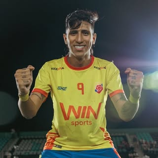

@jeisonmattaa
BarranquillaCreador y futbolista que hace parte de un equipo de fútbol de creadores. Su perfil conecta directamente con el entorno deportivo y ofrece oportunidades para integrar YAJUEGO en contenidos relacionados con partidos, retos y experiencias futboleras.
265,5 milSeguidores3,7%Interacción